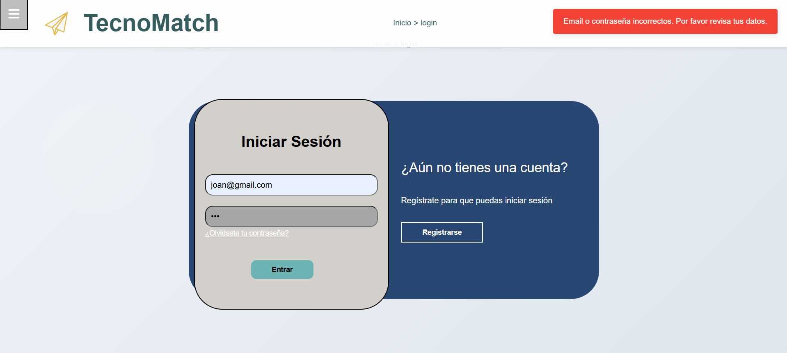

Manejo de Errores y Solución de Problemas (Troubleshooting)
Errores comunes que los usuarios pueden encontrar:
Error al iniciar sesión
Error al enviar formulario
Problemas de conexión
Explicaciones de los mensajes de error y soluciones paso a paso:
1. Error al iniciar sesión
Posibles causas: - Credenciales incorrectas. - Usuario no registrado o cuenta deshabilitada. - Problemas temporales con el servidor de autenticación. - Conexión fallida al backend.
Solución sugerida: - Verificar que el correo y la contraseña estén bien escritos. - Intentar más tarde si el servidor presenta inestabilidad. - Revisar la conexión a internet.
Ejemplo de mensaje del error:
{kind=link}
2. Error al enviar formulario
Posibles causas: - Campos obligatorios vacíos. - Formato inválido en algún dato. - El servidor rechazó la petición. - Tiempo de espera agotado.
Solución sugerida: - Completar todos los campos requeridos. - Revisar el formato del correo, número o información ingresada. - Intentar nuevamente. - Comprobar la conexión o recargar la página.
Ejemplo de mensaje del error:


3. Problemas de conexión
Posibles causas: - El servidor está temporalmente fuera de servicio. - El usuario no tiene conexión a internet. - El firewall o antivirus bloquea la petición. - La API no está respondiendo.
Solución sugerida: - Verificar la conexión del dispositivo. - Probar desde otro navegador o red. - Esperar unos minutos y volver a cargar la página. - Contactar al soporte si el problema persiste.
Ejemplo de mensaje del error: